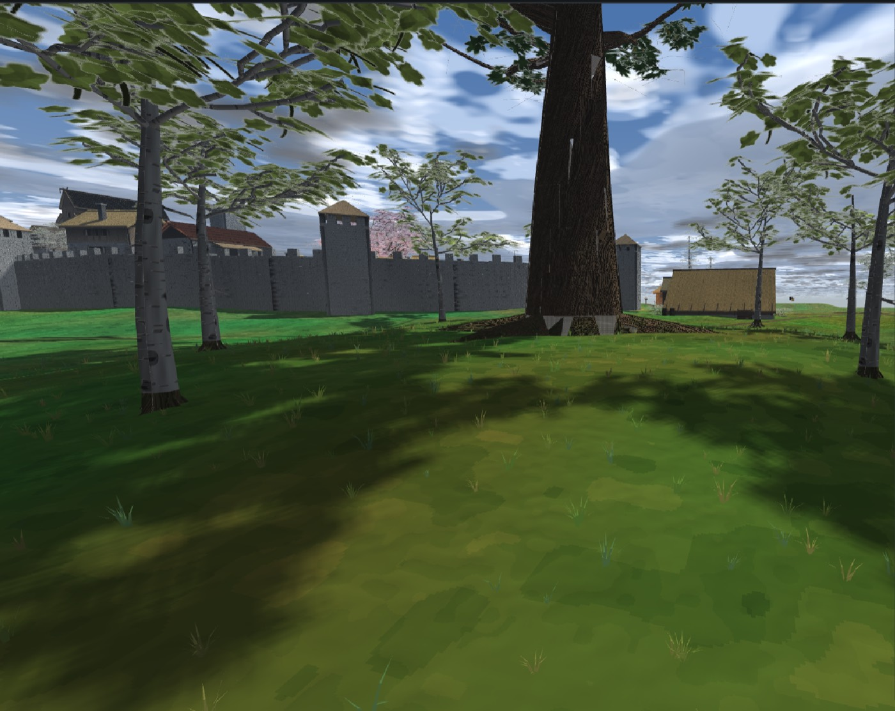
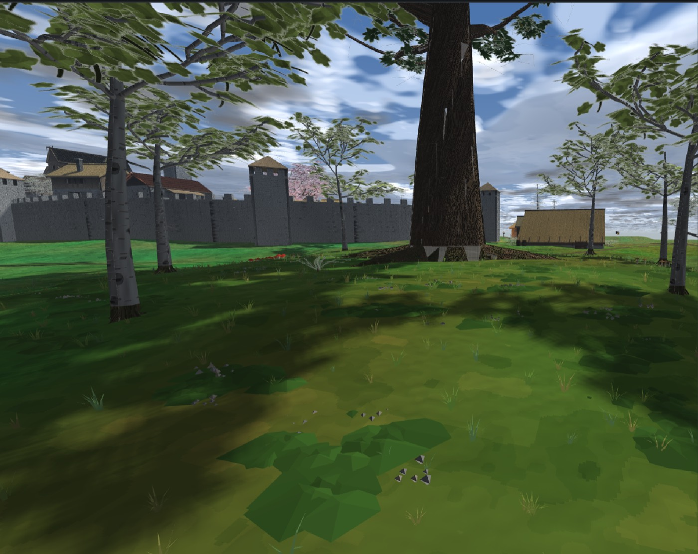
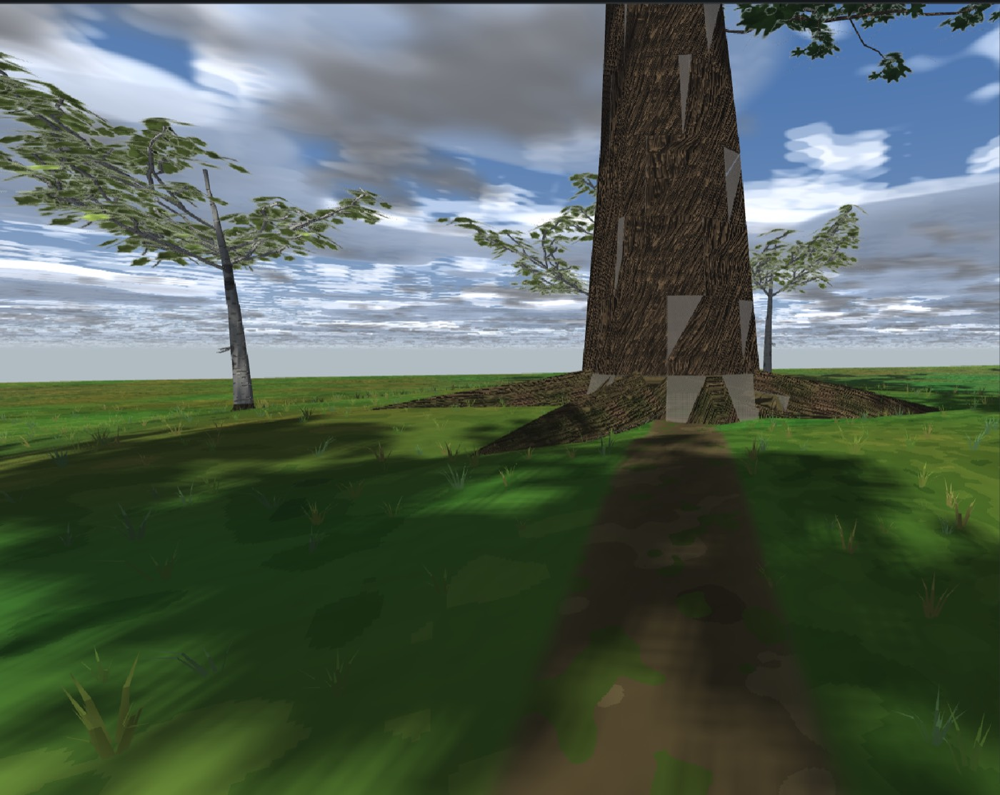
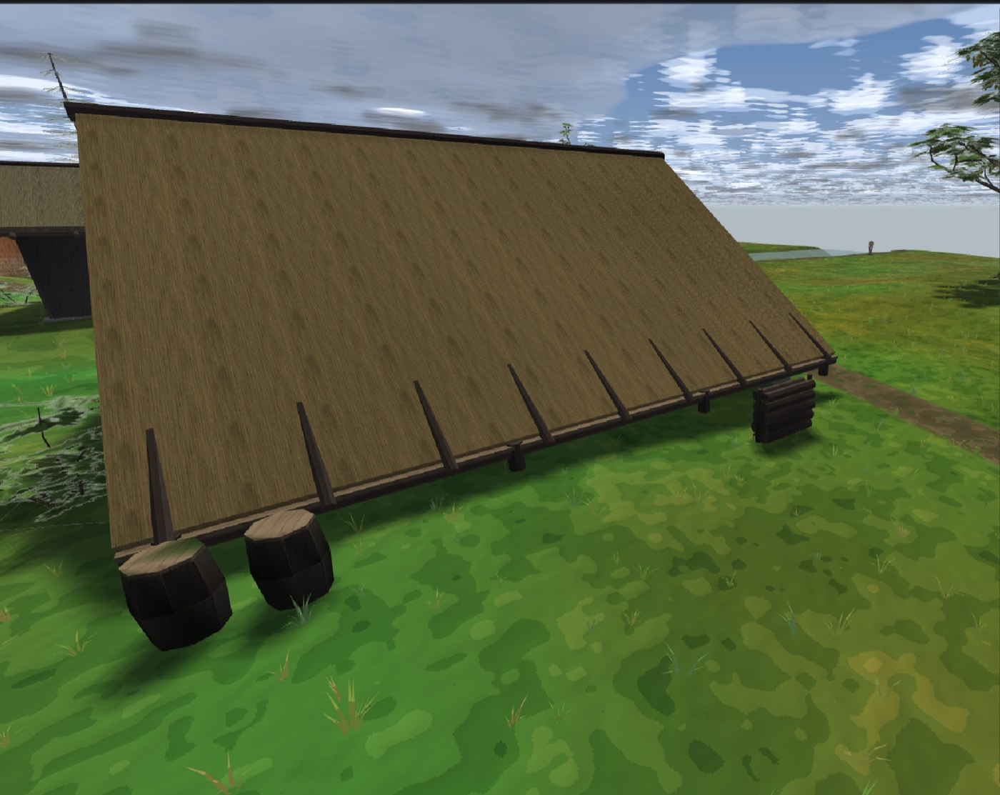
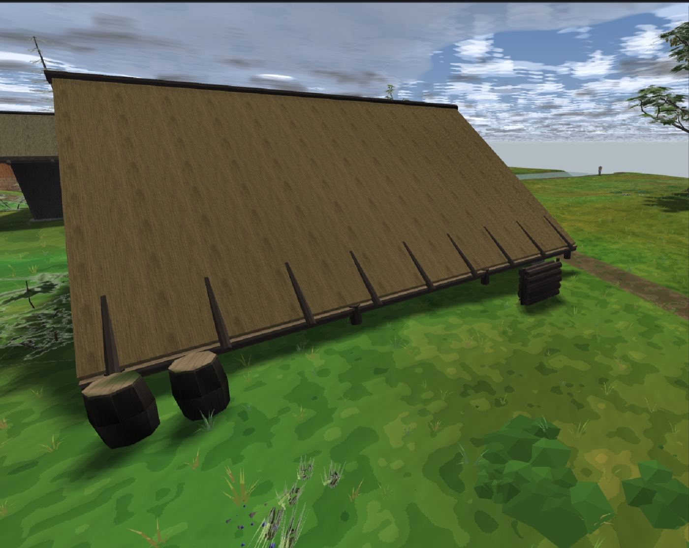
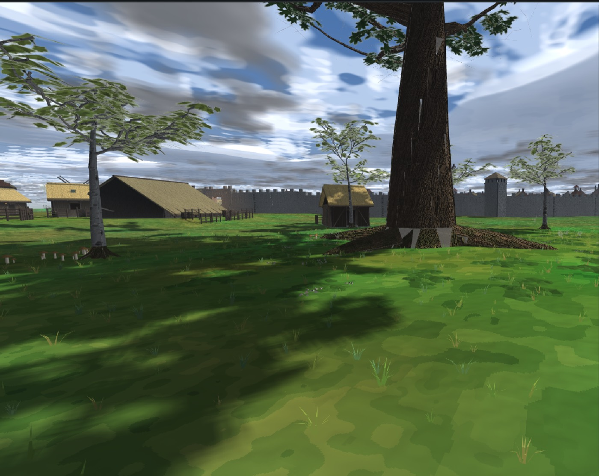

Вайтран и Житнов · tools/gen_city.py, стадия 14б ·
закон tools/flora_sow.py не тронут · 28–29.08.2026
Волна подхвачена у предшественника, остановленного лимитом сессии (транскрипт потерян, правки в дереве целы). Инвентаризация показала, что сделано было почти всё, и переделывать с нуля было нечего:
| Файл | Что в нём было готово |
|---|---|
tools/flora_sow.py | ручка region у акцентов и подроста
(у подлеска и ковра она была с первого дня). Ни одного нового и ни одного
изменённого числа — только область, и приходит она снаружи |
tools/gen_city.py | стадия 14б sow_city_tiers(), классы
CityPaths и CityMask, четырёхугольник двора YARDS,
чтение поля мировых трактов, контрольная рука DFN_CITY_TIERS=0 |
tools/cities/whiterun.py, cornhall.py | палитры ярусов
(что растёт в этом биоме), TIER_SCALE, TIER_INSIDE_WALLS,
полка assets/objects/tiers в MAP_OBJECTS |
tools/cities/*.pathfield | снимки поля мировых трактов судьёй
(--path-field 1.0) — вход выпуска рядом с натуральной землёй |
tools/shoot_tiers_city.sh | четыре камеры боевых городов, одна метка плеча, один прогон |
Не сделано было: бюджет не снят, отчёта нет, и дерево осталось
в плече «до» — последним прогоном предшественника был контрольный
DFN_CITY_TIERS=0. Эта сессия сняла бюджет, нашла по нему одну
поправку (§4), перевыпустила оба города, прогнала судей и написала отчёт.
| Маска | Откуда берётся | Почему не копия |
|---|---|---|
| Полотно и мощение | сами ленты PATHS этого прогона — улицы,
дорожки, полы мест, пятна кварталов | генератор им АВТОР, а не читатель: к стадии 14б они уже собраны |
| Тела города | ВСЕ записи [house]: кладка кольца, дома,
фундаменты, крыльца, бордюр, плетни, дворовый скарб, прилавки | не
PLACED и не FRAMES: куст сквозь поленницу — такой же
дефект, как куст в стене |
| Дворы | четырёхугольник пишется там же, где двор строится, теми же
yard_loc/loc_to_world | второй расчёт того же прямоугольника разошёлся бы с первым на первой же правке |
| Вода | русла чертежа | в воде не сеется ничего |
| Кольцо стен | паспорт города (TIER_INSIDE_WALLS) |
«вся зелень за стеной» — свойство ГОРОДА, а не механизма |
| Мировые тракты | снимок судьи tools/cities/<город>.pathfield
(dfn_scene_check --path-field 1.0) | их прокладывает worldgen, и
ловит [off-path] по ним же судья — своя копия была бы вторым
источником |
Двор — не лес. Двор — утоптанная хозяйская земля за глухой стеной, по
ней ходят с дровами и водой: подлеска, акцентов и подроста в нём нет ВОВСЕ,
ковёр есть (трава под ногой растёт и во дворе). Ярусы — под рощей, а не под
каждым деревом: TIER_GROVE_MIN = 2 — минимальное множественное
число, оно же отделяет рощу от уличного дерева.
| Город | полог | подрост | подлесок | ковёр (мох/трава) | акценты | всего |
|---|---|---|---|---|---|---|
| Вайтран | 35 | 11 | 146 | 147 (141 / 6) | 55 | 359 |
| Житнов | 36 | 6 | 58 | 98 (93 / 5) | 30 | 192 |
Маски сняли посеянное законом: Вайтран — 26 в телах и вплотную к ним плюс 47
прореживанием сплошных (правилом судьи no-overlap); Житнов — 113 и 12.
Дворов у Вайтрана 22, у Житнова 139. Внутри кольца Вайтрана ярусы сеются (город
деревянный, с садами и сквером), внутри кольца Житнова — нет: каменный
город, вся зелень за стену, сказано паспортом.
Мерка — tools/measure_scene_budget.py: треугольники и партии по тому
же правилу, каким приложение раскладывает сцену (плитка 32 м, потоки
wood/cards/bark/ground — разные партии). Это потолок сцены, а не кадр.
| Сцена | размещений | трис | плиток | дро | худшая плитка |
|---|---|---|---|---|---|
| Вайтран ДО | 108 | 324 416 | 27 | 84 | 58 662 (1,1) |
| Вайтран ПОСЛЕ | 467 | 473 442 | 36 | 116 ×1.38 | 87 672 (1,1) |
| Житнов ДО | 36 | 232 872 | 32 | 101 | 36 770 (1,11) |
| Житнов ПОСЛЕ | 228 | 303 590 | 35 | 117 ×1.16 | 62 468 (1,11) |
| ориентир: стенд ярусов forest-v2 | 4 122 | 3 610 574 | 64 | 251 | 128 938 |
| ориентир: trees-glade, В ИГРЕ с 17.08 | 2 484 | 11 700 248 | 52 | 204 | 430 120 |
Дро ≤ ×1.5 — держится с запасом у обоих городов (×1.38 и ×1.16).
spruce-forge-a, spruce-forge-b, две
pine-forge-a — 58 662 из 58 662). То есть худшая плитка дерева —
это РОЩА, ровно то место, под которое закон посева обязан сеять. Замер: если
убрать из неё ковёр целиком (охват 6 м), плитка держит 80 814 — потолок 36 770
недостижим ни при какой плотности ковра, потому что ковёр в ней не при чём.
Потолок, который волна держит: обе сцены ниже стенда ярусов (128 938) и
втрое ниже того, что дерево играет с 17.08 (trees-glade, 430 120).
Бюджет нашёл настоящий дефект первого вида волны — и он был не в плотности, а
в области. Ковру был дан ПОЛНЫЙ охват рощи (TIER_REACH_M = 20 м),
то есть самый широкий охват достался самому дорогому ярусу: плата ковра
стоит 480–1206 трис против 114 у папоротника и 184 у куста. В худшей плитке
Житнова 87 плат мха занимали 42 840 трис — 53% плитки при 5% её растений.
| охват ковра | 20 м | 13 м | 10 м | 8 м |
|---|---|---|---|---|
| худшая плитка Житнова, трис | 80 702 | 62 468 | 43 292 | 38 864 |
| ковёр Житнова, плат | 253 | 98 | 21 | 3 |
| ковёр Вайтрана, плат | 220 | 147 | 95 | 54 |
| дро Житнова | 128 | 117 | 116 | 112 |
Двадцать метров — газон ценой в полплитки; десять — ковра в Житнове больше
нет вовсе. Взято тринадцать, и не как компромисс, а потому что это
охват подлеска: ковёр — ПОЛ подлеска, где куртине уже чистое поле, там и
подстилке не подо что стелиться. Город обходится ОДНОЙ областью «под рощей»
вместо двух (TIER_CARPET_REACH_M = TIER_UNDER_REACH_M). Меняется
ГДЕ, а не СКОЛЬКО: плотность внутри области по-прежнему целиком закон.
Плечо выбирается генератором (DFN_CITY_TIERS=0 — город без
ярусов), а не правкой камеры. Плечо «до» здесь — файл, а не память:
выпуск с DFN_CITY_TIERS=0 совпал с HEAD байт-в-байт на обоих
городах (git diff пуст).



dist_from_worn_edge.


| Приёмка | Вайтран | Житнов |
|---|---|---|
dfn_scene_check --relief, плечо ДО
(DFN_CITY_TIERS=0) |
35 no-overlap, 12 off-path, 94 on-ground | 7 no-overlap, 1 off-path, 21 on-ground |
dfn_scene_check --relief, плечо ПОСЛЕ |
35 / 12 / 94 — те же | 7 / 1 / 21 — те же |
dfn_interior_check --known |
23 локации, 0 боевых находок, 0 сверх известных, 0 протухших | 106 локаций, 0 боевых находок, 0 сверх известных, 0 протухших |
check_paving.py |
ПРОЙДЕНА (связность 98.7%, голо 0.0%, клякс 0) | ПРОЙДЕНА (связность 100.0%, голо 0.0%, клякс 0) |
| Спавн | 0 ярусных растений ближе 2 м от (113, 248) | 0 ближе 2 м от (256, 108) |
gen_city.py --check |
ВЫПУСК СВЕЖИЙ (сцена, рельеф, карта, 23 локации — байт-в-байт) | ВЫПУСК СВЕЖИЙ (сцена, рельеф, карта, 106 локаций — байт-в-байт) |
[place]Это не обещание, а свойство диффа. Дифф обоих городов к HEAD —
чисто добавляющий: 359 и 192 новых блока [place], ноль
удалённых и ноль изменённых строк. whiterun.relief и
cornhall.relief — байт-в-байт с HEAD; все 129 локаций — байт-в-байт;
классы земли и приёмки полотна те же. Контрольная рука (правило 30) —
DFN_CITY_TIERS=0.
Входы выпуска проверены на свежесть: снимки поля мировых трактов пересняты судьёй заново и совпали с лежащими в дереве по всем данным (различаются только 4 строки шапки).
| Что | Результат |
|---|---|
ctest целиком, 131 тест |
131 из 131 на build_posecam (свежайшие
бинари дерева); 130 из 131 на build_grab — разница только в
app_doors, см. врезку |
trees_v1_frozen (табу: вид существующих деревьев не менять) |
зелёный — хэши первой итерации не сдвинулись |
flora_sow_law (прибор закона посева) | зелёный |
interiors_whiterun_all, interiors_cornhall_all |
зелёные |
paving_whiterun, paving_cornhall |
зелёные |
app_doors | красный на СТАРОМ бинаре, зелёный на свежем — см. врезку ниже: не дефект |
app_doors — НЕ ДЕФЕКТ, и первое прочтение было моим промахом.
Сначала я записал его как чужую поломку: DoorsTests.cpp:211 ругался,
что имя DFN_POSTURE_TRACE читается в AppSeats.cpp, а
строки в таблице дверей у него нет. Проверка перед сдачей показала другое:
обе половины на месте — AppSeats.cpp читает дверь,
AppDoors.cpp её описывает, и в рабочем дереве они согласованы.
Красным тест был на СТАРЫХ бинарях (build_grab 14:53,
build_matcore 17:36), собранных в тот момент, когда первая половина
волны поз уже легла, а вторая ещё нет. На собственной сборке той волны
(build_posecam) тест зелёный; на HEAD зелёный
тривиально — там нет ни одной из двух половин.
Мораль, и она не про соседей: на общем дереве красный тест в ЧУЖОЙ сборке
— это утверждение о МОМЕНТЕ КОМПИЛЯЦИИ той сборки, а не о дереве. Прежде чем
записывать соседа в виновные, надо спросить тот же тест у сборки посвежее.
Числа моей волны это не задевает — она не трогает C++ вовсе, — но обвинение
успело попасть в текст коммита 18fb8b9, и там оно останется неверным:
--amend на общей ветке запрещён (правило 29), поэтому поправка
стоит здесь.
App/audio) — спрошено и ОТВЕЧЕНО замером.
Подрост в городах — это новые кроны, и я предупредил ту волну, что её слой
читает позиции деревьев. Ответ пришёл с числами, снятыми щупом по этим самым
сценам, а не прикинутый:
ObjectExtent: число, записанное рядом с
объектом, устаревает молча при перепечке). Порог — верхушка выше 1.2 м.Их же честная оговорка, и она не про эту волну: порог по высоте
ловит любую высокую траву, а не только ярусную. В Вайтране через него проходят
8 glade-grass-b и 6 glade-grass-c, стоявшие там до
ярусов. Тот же класс тихих одиночек, оставлен сознательно.
Материалы-3 (render/core) и камера/позы
(anim/App) этой волной не затронуты: волна — данные и
инструменты, ни одной строки C++. Бинарь грузит сцену как есть — проверено
дважды и на ДВУХ РАЗНЫХ сборках: четырьмя кадрами на сборке волны (она старше
выпуска) и повторным прогоном того же рецепта на build_sheet —
чужой сборке, к которой волна не прикасалась. Кадр рощи Вайтрана вышел
неотличимым. Владельцу пересобирать ничего не нужно: его
dfn_app подхватит новые сцены как есть.
spruce-forge-* и прочих деревьев города дальней формы НЕТ.VoxelMeshView::sky_visibility)
по-прежнему пуста для наружной земли — порог мха считается в генераторе. Долг
первой волны, не погашен.GroundTufts) не тронут: он живёт в
ближних 12 м и о переключении по свету не знает. Ковёр и пучки пока отвечают на
один вопрос двумя способами.